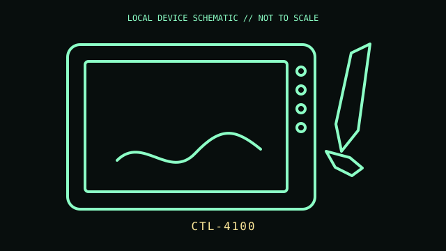

[ PEN TABLETS AND DIGITIZERS // IDENTIFIED COMPONENT ]
Wacom Intuos Small
Small entry-level Intuos pen tablet supplied with a battery-free pressure-sensitive pen.

MODEL IDENTIFICATION: Manufacturer identity: CTL-4100. Compare the unit label, regional suffix, and revision against the manufacturer's manual before repair or compatibility claims.
Model specifications
| Catalog subcategory | Pen tablets and digitizers |
|---|---|
| Exact model / ID | CTL-4100 |
| Model-specific features | Active area 152 × 95 mm; 4,096 pen-pressure levels; four ExpressKeys; USB micro-B wired connection; no built-in Bluetooth on CTL-4100. |
| Interface and host support | Pen pressure and ExpressKey mapping require a compatible Wacom driver and application. CTL-4100 should not be confused with Bluetooth-equipped CTL-4100WL packages. |
| Revision / driver caveat | Check CTL-4100 versus CTL-4100WL on the tablet label: the WL variant adds Bluetooth. Included pen, bundled software, and color depend on market and package. |
Preservation and service notes
Store pen nibs and tablet together; the pen is battery-free and does not need charging. Clean the surface gently and inspect the micro-USB socket and cable for looseness.
Record the as-found label, accessories, host OS, driver/firmware version, and test method. Separate observed condition from published specifications; do not treat family-level feature claims as proof of a unit's revision.
Primary manufacturer documentation
- Wacom Intuos Small product specificationsManufacturer comparison and size/interface details for the Intuos family.
- Wacom Intuos user helpManufacturer model-family support and setup guide; verify the exact CTL suffix.
Manufacturer pages may change or retire. Preserve a copy of the applicable manual and note its revision when documenting a physical unit.